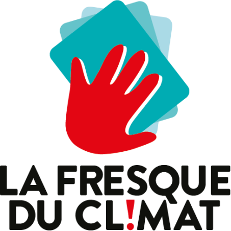
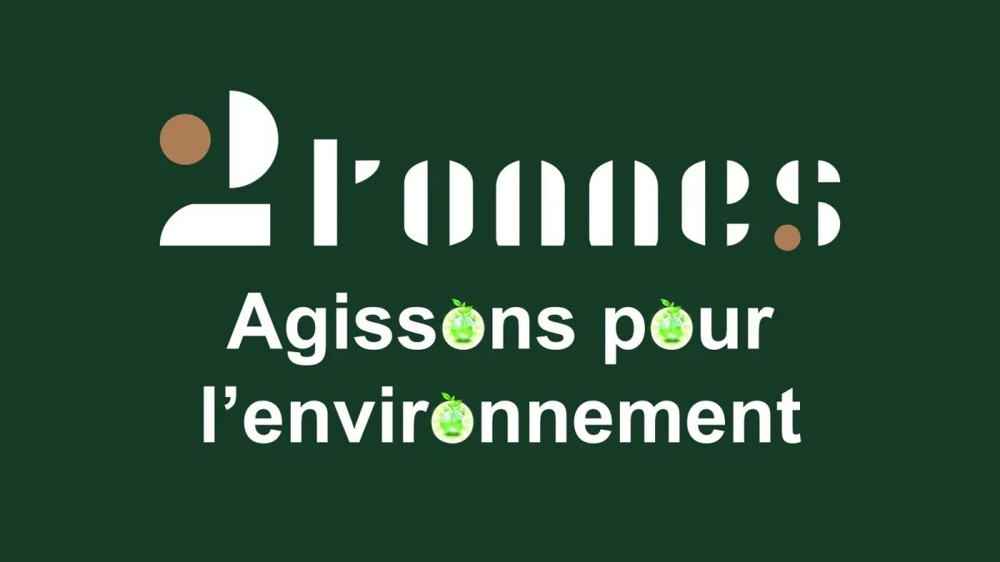

The Climate Fresco
This activity was my first awareness of climate issues, allowing me to discover how much each of our
actions has an indirect/direct impact on climate issues.

The Planetary Boundary Fresco
This activity allowed me to visualize the planetary boundaries that have been exceeded and those that have
not yet been exceeded, but I also saw that it was possible to reverse course and
repair certain boundaries, such as the hole in the ozone layer.

2 Tonnes
The 2-ton activity was a real revelation for me. It made me fully aware of environmental
issues and prompted me to start taking concrete action. After this activity, I realized that
food was the area where I was causing the most pollution, so I limited my meat consumption to four times a week.

Sexual and Gender-Based Violence Formation
I took a training course at the INP on sexual and gender-based violence, enabling me to refer victims of
sexual and gender-based violence. I also learned to distinguish between different types of violence, whether gender-based or discriminatory.